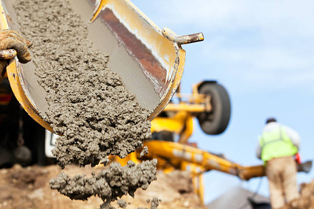
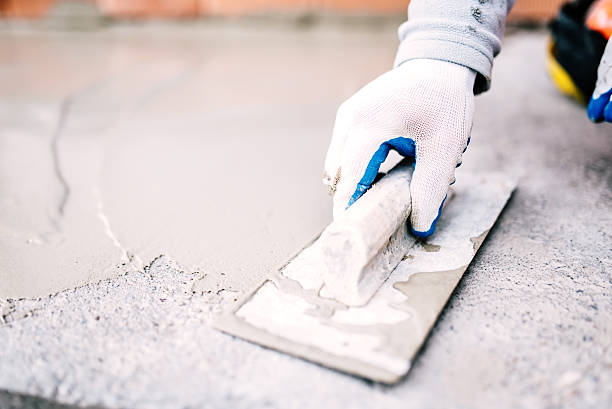
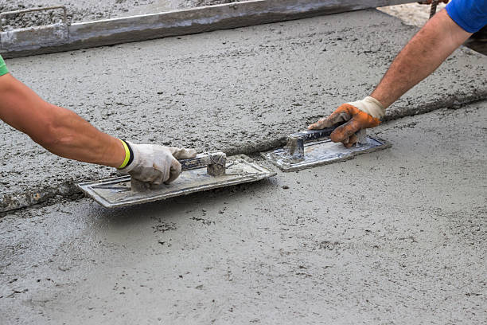
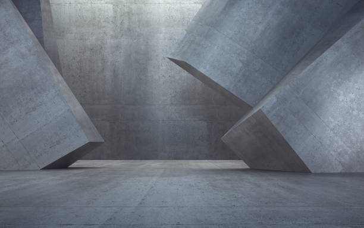

Woodbury Minnesota
info@hudsonconcretecontractors.xyz
Woodbury Minnesota
info@hudsonconcretecontractors.xyz

Premier concrete company in Woodbury Minnesota offering comprehensive solutions for all concrete needs. Expert installation, repair, and maintenance with a focus on durability and aesthetic appeal. Contact us today!
Click Here To Call Us (877) 848-1711Looking for a reliable concrete company in Woodbury Minnesota ? Our expert team specializes in delivering top-notch concrete solutions for residential, commercial, and industrial projects. Whether you're planning a new driveway, patio, or commercial foundation, we have the skills and experience to ensure your project is completed with the highest standards of quality and durability.
Why Choose Us for Your Concrete Needs in Woodbury Minnesota ?
At Concrete, we pride ourselves on being the go-to concrete contractor in Woodbury Minnesota . Our reputation is built on:
Experienced Professionals: Our team has years of experience in the concrete industry, ensuring precise and efficient workmanship.
High-Quality Materials: We use only the best materials, ensuring that your concrete structures are built to last.
Customized Solutions: Every project is unique, and we tailor our services to meet your specific needs and budget.
Timely Completion: We understand the importance of deadlines, and we strive to complete every project on time, without compromising on quality.
Our Concrete Services in Woodbury Minnesota
We offer a wide range of concrete services, including:
Concrete Driveways: Durable and aesthetically pleasing driveways that stand the test of time.
Stamped Concrete: Add a decorative touch to your property with our custom stamped concrete designs.
Concrete Foundations: Strong and stable foundations for both residential and commercial properties.
Patios and Walkways: Beautiful outdoor spaces designed for comfort and style.
Concrete Repairs: Quick and reliable repairs to restore the integrity of your concrete surfaces.
Contact Us Today for a Free Estimate!
If you're in Woodbury Minnesota and need professional concrete services, look no further. Contact us today to discuss your project and get a free, no-obligation estimate. Trust Concrete to bring your concrete vision to life!
Residential & commercial Concrete
Quality services at affordable prices
Immediate 24/ 7 emergency services


Cracks in concrete surfaces are a common concern for homeowners in Woodbury Minnesota and understanding their causes is essential for effective prevention and repair. At Hudson Concrete Contractors, we are dedicated to helping you maintain your concrete surfaces in optimal condition.
Shrinkage During Curing
One of the primary causes of cracks is shrinkage during the curing process. As concrete sets and dries, it naturally contracts. If the curing process is too rapid or not properly managed, it can lead to surface cracks. Ensuring adequate curing time and methods can help mitigate this issue.
Temperature Fluctuations
Concrete is sensitive to temperature changes. Extreme heat or cold can cause the concrete to expand or contract, leading to cracks. Proper control of temperature during both the mixing and curing stages is crucial to prevent these types of issues.
Poor Mixing or Application
Improper mixing of concrete or incorrect application can result in a weak surface prone to cracking. Using the right mix ratios and ensuring proper application techniques are vital for a durable and crack-resistant surface.
Settlement and Soil Movement
Concrete surfaces can also crack due to settling or shifting of the underlying soil. If the ground beneath the concrete is unstable or poorly compacted, it can cause uneven settling, leading to cracks in the surface. Addressing soil issues before pouring concrete is essential for long-term stability.
Overloading and Structural Issues
Excessive weight or structural stress can cause concrete to crack. Ensuring that the concrete is designed and reinforced to handle the expected load is important to prevent such problems.
Preventive Measures and Repair
To prevent cracks, use proper construction techniques, maintain adequate curing conditions, and ensure proper site preparation. If cracks do appear, timely repair is essential to prevent further damage. At Hudson Concrete Contractors, we offer expert services to address and repair concrete cracks, ensuring the longevity and durability of your surfaces.
For reliable solutions to concrete issues in Woodbury Minnesota contact Hudson Concrete Contractors today. We’re here to provide expert advice and quality service to keep your concrete surfaces in top shape.
Residential & commercial Concrete
Quality services at affordable prices
Immediate 24/ 7 emergency services
If you’re looking for reliable cement contractors near you, our experienced team is ready to assist. We specialize in a broad range of cement services, from mixes to installations, ensuring that your project gets the attention it deserves. Our commitment to quality, safety, and customer service makes us the preferred choice in your area. Whether you’re embarking on a small home project or large construction site, we deliver top-notch results tailored to your specifications. Choose our cement contractors for a seamless and satisfying experience.
Just because you’re on a budget doesn’t mean you have to sacrifice quality. Our affordable concrete services provide you with cost-effective solutions that don’t compromise on durability or aesthetics. We believe that high-quality concrete work should be accessible to everyone, which is why we offer competitive pricing without cutting corners. Our experienced team is committed to delivering excellent results that make your investment worthwhile. Opt for our affordable concrete services and see how we can effectively turn your visions into reality without breaking the bank.
Protecting your concrete surfaces from wear and damage is essential for longevity. Our concrete sealing services involve applying high-quality sealers that enhance the durability of your concrete and prevent moisture, stains, and UV damage. With our professional sealing, you can enjoy a cleaner, more durable surface that maintains its appearance over the years. Count on us to provide exceptional sealing services that safeguard your investment.
Uneven concrete surfaces can be frustrating and hazardous. Our concrete leveling services are designed to restore your surfaces to their original state, eliminating tripping hazards and enhancing the visual appeal. Our skilled technicians use advanced techniques such as mudjacking and poly leveling to correct uneven surfaces effectively. When you choose us, you can expect quality workmanship and a commitment to safety that ensures your property’s integrity.
A solid foundation is the key to any successful construction project, residential or commercial. Our concrete foundation installation services are designed to provide a strong, stable base for your building. We carefully assess your site and tailor our methods to ensure optimal stability and compliance with local regulations. By choosing us, you ensure that your foundation is constructed with precision, setting the stage for a durable structure that will last for generations.
If you’re looking to add vibrant color and style to your concrete surfaces, our concrete staining services are the perfect solution. Staining is an excellent way to enhance the appearance of patios, driveways, and floors, providing a beautiful finish that resembles natural stone. We utilize high-quality stains and expert techniques to achieve stunning results. Choosing us means you receive professional service, creative design options, and a beautiful transformation that will elevate your space.
Among the many concrete construction companies, Concrete stands out due to our dedication to quality and customer satisfaction. Our comprehensive range of services covers everything from residential to commercial concrete applications, catering to every need. We focus on innovative solutions and use the best materials for all our projects, ensuring durability and visual appeal. Our experienced contractors are committed to delivering timely and cost-effective results that meet your expectations. Partner with us for your concrete projects and experience excellence in construction.

When it comes to construction, having access to quality materials is key, and our ready mix concrete delivery service ensures that you receive the exact specifications needed for your project. With our efficient delivery system and high-quality ready mix, you can be assured of quick service without compromising on quality. Our team works diligently to manage your concrete needs, providing flexibility and reliability whether you're working on a small home improvement project or a large commercial construction. Choose us for your ready mix concrete delivery needs, and experience seamless service from start to finish.
Years Experience
Expert Technicians
Satisfied Clients
Compleate Projects
At Painting Vikmanic, we understand that choosing the right painting contractor is essential for enhancing the beauty and value of your property in Woodbury Minnesota . Our commitment to quality, professionalism, and customer satisfaction sets us apart in the industry.
Why choose us? First, our team of skilled professionals is dedicated to providing top-notch painting services tailored to your unique needs. Whether you’re looking to refresh your home’s interior, boost curb appeal with exterior work, or require specialized finishes, we have the expertise to deliver stunning results.
We utilize only the best materials and techniques, ensuring long-lasting durability and a flawless finish. Our attention to detail guarantees that every project is completed to the highest standards, giving you peace of mind. Furthermore, we prioritize open communication and transparency throughout the process, keeping you informed every step of the way.
As a locally-owned company, we take pride in serving the Woodbury Minnesota community. Our reputation is built on trust, reliability, and a passion for excellence. We offer free estimates and consultations, making it easy for you to plan your next painting project without any obligation.
Choose Painting Vikmanic for your painting needs in Woodbury Minnesota , and experience the difference of working with a contractor who truly cares about your vision. Let us bring your ideas to life with vibrant colors and exceptional craftsmanship. Contact us today to get started!
When it comes to finding reliable and professional concrete contractors near you, it's essential to choose experts who understand the local landscape, climate, and building codes. Our team of skilled concrete contractors provides top-notch services tailored to meet your unique needs. With years of experience in the industry, we guarantee high-quality workmanship and attention to detail in every project. Whether it's a simple repair or a complete installation, we handle it all with precision and care.
Your home is your sanctuary, and we believe it deserves the best quality concrete work. Our residential concrete services cater to all your needs, from installing beautiful driveways to durable sidewalks. We use high-quality materials and innovative techniques to ensure that your concrete structures not only look great but also withstand the test of time. Our skilled professionals work closely with you to understand your vision and bring it to life, guaranteeing satisfaction in every project. With a focus on customer service and attention to detail, we are proud to be the premier choice for residential concrete services.
The foundation of any successful commercial venture lies in solid concrete structures. At Concrete, our commercial concrete contractors in Woodbury Minnesota possess the expertise and experience required to tackle projects of all sizes. From warehouses to retail spaces, our team delivers high-quality concrete solutions designed to meet the specific demands of your business. We prioritize safety, efficiency, and timely project completion, ensuring your commercial space is ready as scheduled. Choose us for your commercial concrete projects, and experience the reliability and professionalism that sets us apart in Woodbury Minnesota .
Your driveway is the first impression of your home, making it vital to choose a reputable contractor for its installation. Our dedicated team specializes in concrete driveway installation in Woodbury Minnesota utilizing the best materials and techniques to create a durable, long-lasting surface that enhances your home’s curb appeal. Not only do our driveways withstand heavy traffic and the elements, but they also offer customization options such as color and texture, ensuring a perfect fit for your home's design. Trust Concrete for unmatched quality and service in driveway installations.
Transform your outdoor space into a beautiful oasis with our concrete patio installation services . Patios provide the perfect venue for gatherings and family events, and our expert crew can design and build a patio that matches your lifestyle. Our process includes meticulous planning, custom design options, and quality craftsmanship. By choosing us, you gain a patio that is not only visually appealing but also crafted to withstand the elements and regular use, ensuring years of enjoyment.
Stamped concrete is an ideal solution for those seeking the beauty of natural stone or brick without the high costs. Our stamped concrete services allow you to customize your concrete surfaces with patterns and colors that enhance your property’s aesthetic. Whether for driveways, patios, or walkways, our team is dedicated to providing meticulous applications that result in stunning surfaces. With our innovative techniques and materials, your stamped concrete will not only look fantastic but also stand up to the elements.
A strong foundation is crucial for the stability of your property. When issues arise, our concrete foundation repair services in Woodbury Minnesota come into play. Our expert team has the tools and expertise to diagnose and fix a range of foundation issues, from cracks to settling. We emphasize thorough inspections and a tailored approach to address your specific needs. Choosing us ensures that your property will have a solid foundation that eliminates worries about future structural problems.
Concrete slabs serve as the backbone for many structures, offering stability and durability. Our concrete slab installation services are aimed at providing a solid foundation for your building, whether it’s residential or commercial. Our experienced contractors utilize cutting-edge technology and techniques to ensure that your slab is installed properly and securely. We consider factors such as soil conditions, moisture control, and load specifications to create a slab that will last for decades. Trust us to deliver high-quality concrete slabs that meet your specific project needs and requirements.
Transform your outdoor or indoor space with our decorative concrete services that are as beautiful as they are functional. From stamped and stained concrete to overlays and custom designs, we have the creative solutions to enhance your property . Our skilled team combines artistry with technical expertise to execute designs that match your style and vision. Whether it’s for patios, walkways, or flooring, our decorative services add a unique touch to any project. Choose Concrete and elevate your spaces with our stunning decorative concrete options.
If your concrete surfaces are showing wear and tear, our concrete resurfacing services in Woodbury Minnesota are the ideal solution to restore their beauty and functionality. This cost-effective approach extends the lifespan of your concrete while revitalizing its appearance. We use high-quality resurfacement products that create a smooth finish and are resistant to cracking and peeling. Our team is dedicated to working closely with you to select the best techniques and finishes for your specific needs.
Our concrete repair contractors in Woodbury Minnesota are highly trained professionals ready to tackle any concrete damage you may have. Be it cracks, spalling, or surface issues, we approach each repair task with precision and care. By employing advanced repair techniques and quality materials, we restore your concrete surfaces effectively and affordably. Choosing us means you’ll receive outstanding service and durable repairs that enhance the safety and aesthetics of your property.
Sidewalks are not only functional but also contribute to the overall aesthetic of your property. If you’re experiencing cracks, uneven surfaces, or other issues with your sidewalks, our sidewalk concrete repair services are here to help. Our team works quickly and efficiently to restore safety and functionality to your sidewalks, using high-quality materials and techniques for a durable finish. We understand the importance of curb appeal and safety in your community. Choose us for reliable and professional sidewalk repairs that make a difference.
Concrete flooring is becoming a popular choice for both residential and commercial spaces due to its durability and versatility. Our concrete floor installation services in Woodbury Minnesota offer a wide range of options, including polished, stained, and stamped concrete. With a focus on aesthetics and functionality, we help you select the right finish that suits your style and requirements. Our expert installation ensures that your concrete floors are not only beautiful but also resilient and easy to maintain.
Sometimes, the first step in a successful concrete project is removal. Our concrete removal services provide efficient and safe solutions for getting rid of unwanted concrete structures. Our team is equipped with the necessary tools and expertise to handle both small and large removal jobs. We take care to minimize disruption to your property and offer timely completion, making us the go-to choice for your concrete removal needs.
Finding a reliable local concrete company can make all the difference in your construction projects. At Concrete, we pride ourselves on being a trusted choice among local concrete companies . Our commitment to quality, affordability, and customer service has made us a preferred contractor for all concrete services. We are deeply rooted in the community and dedicated to providing top-notch services tailored to meet the specific needs of our clients. Partner with us for your next concrete project, and experience the local difference.
Choosing the best concrete contractors is crucial for the success of your project. At Concrete, we are proud to be recognized as the best for our exceptional workmanship, attention to detail, and customer-first approach. Our team consists of skilled professionals who are passionate about delivering high-quality concrete solutions tailored to your needs. We employ the latest techniques and equipment to ensure every project is executed flawlessly, from start to finish. Experience the excellence that comes with choosing the best in the business.
Concrete pouring is a skilled task that requires precision and expertise. Our concrete pouring services are designed to provide you with a flawless and efficient pouring process, whether you need foundations, driveways, or any other concrete application. We utilize advanced equipment and high-quality materials to ensure your concrete is poured accurately and with minimal fuss. Our team works diligently to meet your project timeline and requirements, guaranteeing that you receive a smooth, durable finish for your concrete surfaces. Trust us to handle your concrete pouring needs with professionalism and care.
The durability and lifespan of concrete are critical considerations for homeowners and businesses in Woodbury Minnesota . At Hudson Concrete Contractors, we understand that several factors influence how long your concrete surfaces will last and remain in good condition.
Quality of Materials
The quality of the materials used in concrete mixing directly impacts its durability. High-quality cement, aggregate, and water ensure a strong and resilient mixture. Using premium materials can prevent common issues such as cracking, scaling, and erosion, extending the lifespan of your concrete surfaces.
Proper Mixing and Curing
Correct mixing ratios and adequate curing are essential for optimal concrete performance. Over- or under-mixing can weaken the concrete, while improper curing can lead to surface cracks and reduced strength. Ensuring the right proportions and maintaining appropriate curing conditions are vital for enhancing concrete durability.
Environmental Conditions
Environmental factors play a significant role in the lifespan of concrete. Extreme temperatures, high humidity, and exposure to chemicals can accelerate wear and tear. Using sealers and protective coatings can help shield concrete from harsh environmental conditions and prolong its service life.
Load and Stress
Concrete must be designed to handle the specific loads and stresses it will encounter. Overloading or structural stress can cause premature deterioration. Properly calculating and reinforcing concrete to meet the demands of its use will ensure long-term durability.
Site Preparation and Installation
The quality of site preparation and installation is crucial. Proper grading, drainage, and soil compaction help prevent settling and cracking. Ensuring a solid foundation and correct installation practices are key to a durable concrete surface.
Maintenance Practices
Regular maintenance, such as cleaning and sealing, plays a crucial role in extending the lifespan of concrete. Routine inspections and prompt repairs of any minor issues can prevent more significant problems and preserve the integrity of your surfaces.
For expert guidance and durable concrete solutions in Woodbury Minnesota trust Hudson Concrete Contractors. Contact us today to learn more about maintaining and enhancing the longevity of your concrete surfaces.
Woodbury (/ˈwʊdˌbɛri/ WUUD-BERR-ee) is a city in Washington County, Minnesota, United States, eight miles (13 km) east of Saint Paul along Interstate 94. It is part of the Minneapolis–Saint Paul metropolitan area. The population was 75,102 at the 2020 census, making it Minnesota's eighth most populous city.
Yes, we use steel reinforcement (rebar or mesh) in concrete installations to increase strength and durability .
Yes, Hudson Concrete Contractors provides residential concrete services such as driveway, patio, and walkway installations .
The time frame depends on the project size, but most concrete projects by Hudson Concrete Contractors are completed within 3-7 days in Woodbury Minnesota .
Cement is a key ingredient in concrete. Concrete is a mixture of cement, sand, gravel, and water. Hudson Concrete Contractors uses high-quality concrete for all projects .
Yes, Hudson Concrete Contractors is fully licensed and insured to provide professional and safe concrete services .
Yes, Hudson Concrete Contractors has the expertise and equipment to manage large commercial and residential concrete projects .
Hudson Concrete Contractors provides a range of services including driveways, patios, foundations, sidewalks, and decorative concrete installations.
Yes, we offer concrete resurfacing services in Woodbury Minnesota to restore old, worn-out surfaces and make them look brand new.
Yes, we offer concrete demolition and removal services for old or damaged concrete .
Yes, we offer durable concrete retaining wall construction for both residential and commercial properties.
Absolutely. Hudson Concrete Contractors has extensive experience managing large-scale commercial concrete projects .
The best time to pour concrete is during mild weather conditions, typically in spring or fall, but we can work year-round.
Hudson Concrete Contractors recommends high-strength, durable concrete mixes designed for heavy traffic and weather resistance for driveways .
Yes, we use special techniques and additives to pour concrete in cold weather conditions ensuring proper curing.
Yes, we provide concrete leveling and repair services to fix uneven or sunken surfaces.
Yes, Hudson Concrete Contractors provides expert concrete foundation installation for homes and commercial buildings .
Concrete is an excellent option for patios in Woodbury Minnesota due to its durability, low maintenance, and customization options for color and texture.
We recommend waiting at least 7 days before driving on a new concrete driveway installed by Hudson Concrete Contractors .
A properly installed concrete driveway by Hudson Concrete Contractors can last up to 30 years with proper maintenance .
Concrete is a sustainable material, especially when recycled. Hudson Concrete Contractors follows environmentally friendly practices in Woodbury Minnesota .
Yes, we provide concrete sidewalk installation and repair services for residential and commercial properties in Woodbury Minnesota .
Yes, we specialize in stamped concrete services in Woodbury Minnesota offering decorative options to mimic stone, brick, or tile.
Yes, Hudson Concrete Contractors offers free, no-obligation estimates for all concrete projects .
Concrete typically takes around 28 days to fully cure, but it can be walked on within 24-48 hours. Hudson Concrete Contractors advises waiting longer for heavy loads.
Yes, we offer custom concrete design services, including decorative, stamped, and colored options to match your vision .
Yes, we provide professional concrete repair services to fix cracks, spalling, and other damage.
Proper site preparation, including grading and leveling, is crucial. Hudson Concrete Contractors handles all prep work to ensure a smooth, durable installation .
The cost of concrete work depends on the project's size and complexity. Hudson Concrete Contractors offers competitive pricing and free estimates .
Concrete is low-maintenance but sealing every few years and occasional cleaning can help prolong its life. Hudson Concrete Contractors provides maintenance tips in Woodbury Minnesota .
Yes, we offer a variety of colored concrete options to enhance the appearance of your patios, driveways, or walkways in Woodbury Minnesota .
The concrete patio installation by Hudson Concrete Contractors in Woodbury Minnesota was outstanding. They were professional, efficient, and the end result is fantastic. We highly recommend their services! — James T.
Profession
The concrete repair work by Hudson Concrete Contractors in Woodbury Minnesota was flawless. Their team was knowledgeable, and the repairs were done quickly and professionally. We are very satisfied! — David E.
Profession
Hudson Concrete Contractors did an outstanding job on our driveway in Woodbury Minnesota . The team was professional, punctual, and the quality of their work exceeded our expectations. Highly recommend them for any concrete needs! — Sarah T.
Profession
Woodbury MN Concrete Pros
(877) 848-1711
info@hudsonconcretecontractors.xyz
09.00 AM - 09.00 PM
09.00 AM - 12.00 PM